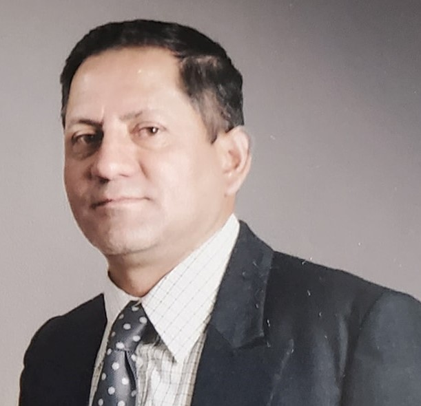
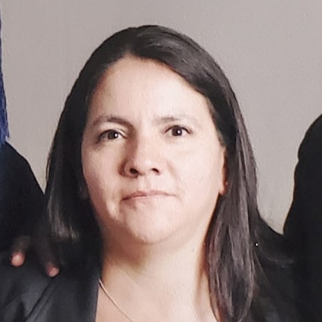

Mecanica Santacruz
Mecánica Santacruz es una empresa de Mecánica de Precisión y Mecánica
Industrial especializada en fabricación de moldes de inyección y termoformado, mantenimiento de
maquinaria, y trabajos de precisión. Tiene como objetivo prestar servicio de centro de mecanizado CNC,
diseño, fabricación y mantenimiento de maquinaria de toda índole, mantenimiento predictivo de máquinas,
productos y procesos, y cualquier otra actividad relacionada con la mecánica de precisión e industrial y
la Ingeniería mecánica.

- Cesar Santacruz Ortega
- Gerente
- .

- Maria Portilla Jacome
- Contadora
- .
Vision
- Ser un referente dentro del sector de la Ingeniería mecánica y de superficies por parte de sus
clientes, empleados y proveedores, así como de todos los grupos de interés relacionados con la
actividad de nuestra empresa.
- Conseguir que nuestros clientes estén satisfechos y obtengan el mejor de los servicios posibles.
- Aglutinar los conceptos de calidad, eficiencia y profesionalidad en uno solo.
Mision
La mision de Mecanica Santacruz es:
- Contribuir a la innovación y el desarrollo de la industria mecánica y de superficies, poniendo a
su disposición nuestros servicios de máxima calidad en mecánica de precisión, reparación de
equipos dinámicos, proyección térmica, laser cladding, cojinetes antifricción, soldaduras
especiales e ingeniería inversa.
- Proporcionar unos servicios de calidad que ayuden a nuestros clientes a satisfacer sus demandas.
Valores
Los valores de Mecanica Santacruz son:
- Vocación de servicio y atención personalizada. Cada cliente es diferente y
cada uno de ellos es
especial. Por eso nos adaptamos a las necesidades particulares de cada uno y de esa manera somos
capaces de ofrecerles nuestros mejores servicios y soluciones a medida.
- Profesionalidad y excelencia. Desde la gestión previa hasta la reparación o
fabricación del
producto, velamos para hacerlo con la mayor profesionalidad y excelencia. Para ello contamos con las
mejores instalaciones, el mejor equipo humano y un servicio integral de reparaciones.
- Alta especialización y conocimiento. Contamos con un equipo de profesionales
altamente especializado capaz de aportar todo el conocimiento necesario en cada etapa del proceso.
- Trabajo en equipo y rigor. Nuestro trabajo en equipo y la buena coordinación entre
los distintos
departamentos de la empresa,nos permiten realizar los servicios que ofrecemos a nuestros clientes
con el mayor rigor y perfección del mercado.
- Innovación continua y desarrollo tecnológico. Nos encanta lo que hacemos pero aún
nos gusta más ser
capaces de dar solución a cualquier necesidad que presente la industria. Por eso, la innovación
continua, la implementación constante de mejoras en las técnicas que ofrecemos y el desarrollo
tecnológico son nuestras premisas.
- Participación en nuevos proyectos nacionales e internacionales. Con la mirada
siempre puesta en
seguir creciendo y mejorando, participamos activamente en proyectos de investigación tanto a nivel
nacional como internacional.
- Solida ética laboral y cumplimiento de la legislación. A parte del trabajo bien hecho y de nuestra
extensa experiencia en el sector de la ingeniería mecánica y de superficies, nuestra ética
profesional y el buen cumplimiento de la legislación nos avalan desde hace más de 60 años.